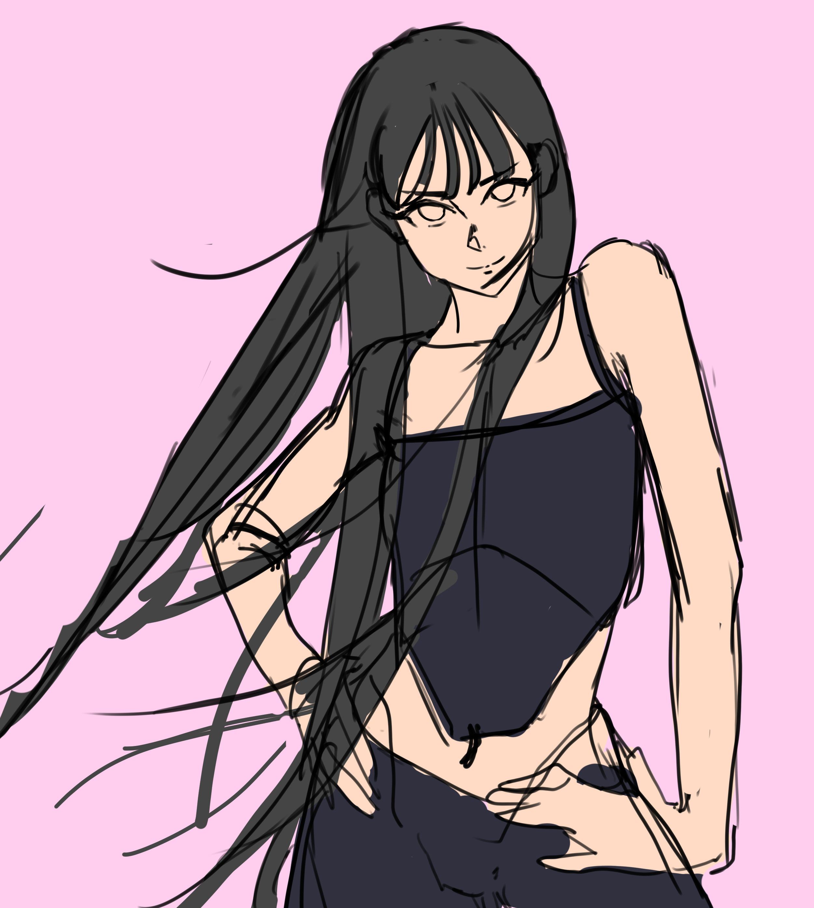

創
ABOUT ME
目前就讀於國立高雄科技大學資訊工程系，專注於程式開發與軟硬體整合。
同時深耕於數位插畫創作，致力將科技的硬核實力與現代藝術的感性視覺交織，
在效能與美感兼具的原則下，建構出最具沉浸感的數位互動體驗。
SKILLS
Tech
Art
PORTFOLIO





CONTACT
Email: qws2288@gmail.com
© 2026 doyoda. All Rights Reserved.